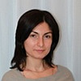
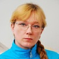
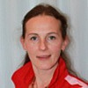

Дошкольное отделение школы № 324
В 2015 году 59% первоклассников Школы № 324 пришли из дошкольного отделения.
- улица Лобачевского, 58
- улица Лобачевского, 56
- проспект Вернадского, 48
- улица Удальцова, 75
- улица Удальцова, 31
Воспитатели
Воспитатели, которых чаще всего благодарят родители (отзывы и профили сотрудников взяты с официального сайта школы):|

Воспитатель
Габоева Мадина Измаиловна
6 благодарностей |
Трофимова Наталья Владимировна
4 благодарности |
Воспитатель
Печкан Марина Николаевна
4 благодарности |
Воспитатель
Хандакова Мария Николаевна
3 благодарности |
|
Психолог
Разумова Анна Александровна
2 благодарности |
Воспитатель
Буглак Елена Васильевна
1 благодарность |
Воспитатель
Голикова Ольга Евгеньевна
1 благодарность |
Воспитатель
Хмель Надежда Валерьевна
1 благодарность |
|

Физ. рук.
Шеляшкова Татьяна Борисовна
1 благодарность |
Воспитатель
Хабибуллина Раиса Николаевна
1 благодарность |

Физ. рук.
Гуськова Ольга Васильевна
1 благодарность |
Воспитатель
Дымова Эльвира Анатольевна
1 благодарность |
Отзывы
Данные собраны c официального сайта школы и через форму для отзывов.
От лица всей нашей семьи хочу выразить огромную благодарность Трофимовой Наталье Владимировне, педагогу компьютерно- игрового комплекса детского сада №272, преподавателю программы ТРИЗ (теория решения изобретательских задач), за её работу с детьми, творческий и увлеченный подход к своему делу. Необычайно радует, что уже в дошкольном возрасте наших детей учат мыслить нестандартно, находить интересные, оригинальные решения самых разнообразных задач, изобретать, творить... Честно говоря, не ожидали такого подхода от бюджетного дошкольного учреждения, и были очень приятно удивлены. Именно благодаря таким педагогам, как Наталья Владимировна, из детей развиваются настоящие личности - думающие, творческие, имеющие на всё своё собственное мнение. Благодаря Наталье Владимировне моя дочь, Перелешина Полина (а также её родители ;-) ), узнала что такое ТРИЗ, приняла участие в международном конкурсе и олимпиаде по ТРИЗ, и заняла в них 1-ые места. Эти первые достижения моей дочери - заслуга Натальи Владимировны. Ещё раз СПАСИБО Вам за Вашу работу!
Здравствуйте! От имени родителей выпускной группы №5, нашего садика № 213, хочу выразить благодарность всему педагогическому составу нашего уже родного садика!!! Сказать огромное спасибо Сабуровой Любовь Дмитриевне за то, она собрала такой тёплый, дружный коллектив! Мы счастливы, что наших детей с ясельной группы вели наши любимые, прекрасные воспитатели: Елена Васильевна и Надежда Валерьевна. Спасибо вам за ваше душевное, чуткое и внимательное отношение к нашим детям! За вашу сильную подготовительную программу к школе. Низкий вам поклон за вашу работу!!! Нам очень жаль, что приходится с вами расставаться. Хочется пожелать вам благополучия во всём и интересных новых детишек!!!!!
От имени всех родителей выпускников нашей группы №7 хотела бы сказать огромное спасибо всем педагогам и сотрудникам детского сада № 213. Выражаю благодарность заведующей детским садом № 213 Сабуровой Любовь Дмитриевне, воспитателям нашей группы Хабибуллиной Раисе Николаевне и Голиковой Ольге Евгеньевне, младшему воспитателю Коротковой Надежде Григорьевне, а также всему коллективу этого дошкольного образовательного учреждения за их самоотверженный труд и желание работать в детском саду, воспитывая подрастающее поколение. Помимо необходимых знаний они вложили в наших детей частичку себя. Сумели проникнуть в детские сердца и поселить в них доброту, любовь и радость. Оставайтесь всегда такими же творческими, трудолюбивыми и любящими своих воспитанников педагогами. Спасибо Вам за наших детей!
Добрый день!
Мы, родители Никиты Синтюрева, посещающего группу № 5 д/с №272 выражаем благодарность воспитателю – Печкан Марине Николаевне. Хотим отметить ее высокий профессионализм, чуткое отношение к детям, заботу, внимание, индивидуальный подход к каждому ребенку, доброту и теплоту - и особенно ТЕРПЕНИЕ.
В группе царит комфортная теплая обстановка, благодаря пониманию и равноправию. Марина Николаевна воспитывает детей не только послушными, но и, в первую очередь самостоятельными, открытыми, честными и добрыми.
Также хотелось бы выразить особую благодарность за спортивные достижения нашего сына, Гуськовой Ольге Васильевне и Шеляшковой Татьяне Борисовне, за их профессиональный подход, за способность замечать стремление нашего мальчика, за любовь к своему делу, ведь это не просто работать с детьми.
СПАСИБО! НАМ ОЧЕНЬ С ВАМИ ПОВЕЗЛО!.
Низкий им поклон за всё!!! Спасибо большое за вашу заботу!
Мы, родители Никиты Синтюрева, посещающего группу № 5 д/с №272 выражаем благодарность воспитателю – Печкан Марине Николаевне. Хотим отметить ее высокий профессионализм, чуткое отношение к детям, заботу, внимание, индивидуальный подход к каждому ребенку, доброту и теплоту - и особенно ТЕРПЕНИЕ.
В группе царит комфортная теплая обстановка, благодаря пониманию и равноправию. Марина Николаевна воспитывает детей не только послушными, но и, в первую очередь самостоятельными, открытыми, честными и добрыми.
Также хотелось бы выразить особую благодарность за спортивные достижения нашего сына, Гуськовой Ольге Васильевне и Шеляшковой Татьяне Борисовне, за их профессиональный подход, за способность замечать стремление нашего мальчика, за любовь к своему делу, ведь это не просто работать с детьми.
СПАСИБО! НАМ ОЧЕНЬ С ВАМИ ПОВЕЗЛО!.
Низкий им поклон за всё!!! Спасибо большое за вашу заботу!
Я хотела бы выразить благодарность Мадине Измаиловне Габоевой – нашему воспитателю и преподавателю английского языка. Мой сын – Артем Обридко – ее воспитанник в средней группе № 4 детсада 272. Артем мой младший ребенок, и за 9 лет знакомства с детскими садиками мы никогда не встречали преподавателя, который так любит детей и так заботится о каждом как о своем.
Мадина Измаиловна не только замечательный воспитатель, но и отличный преподаватель английского для детей. Она потрясающий педагог, и я очень рада, что она есть в жизни у Темы и всех нас.
Хотела бы поблагодарить Мадину Измаиловну и руководителей детского сада 272 за замечательный подбор педагогов.
С уважением,
Сегалова Елена Александровна,
Мама Артема Обридко 8 916 385 49 73
8 925 859 31 89
Мадина Измаиловна не только замечательный воспитатель, но и отличный преподаватель английского для детей. Она потрясающий педагог, и я очень рада, что она есть в жизни у Темы и всех нас.
Хотела бы поблагодарить Мадину Измаиловну и руководителей детского сада 272 за замечательный подбор педагогов.
С уважением,
Сегалова Елена Александровна,
Мама Артема Обридко 8 916 385 49 73
8 925 859 31 89
ГКП. Детский сад 463 . Благодаря гкп у мамы появляется пару часов для отдыха или домашних дел, что не может не радовать. Анна Александровна хорошо развивает деток, играет, и занимается с ними, каждый день что то новое, разные занятия. Они лепят, рисуют, танцуют, смотрят представления, созданные Анной Александровной. Дочь очень её любит и ей нравится ходить в садик. Что тоже радует. В саду очень много игрушек, и всего всевозможного для игр с детьми. Так же по мимо воспитателя, деток развивают ещё педагоги по музыке и по Физо.
Вложенный файл
Вложенный файл
От имени Родительского комитета и от себя лично хотелось бы выразить благодарность и признательность воспитателю 1 группы детского сада 215 Хандаковой Марии Николаевне. Мария Николаевна очень внимательный, ответственный, чуткий, вежливый воспитатель. Мария Николаевна всегда очень приветливо и с улыбкой встречает детей, дети с удовольствием идут в детский сад, с интересом и радостью рассказывают о проведенном дне. С ее приходом в группе сложилась очень дружелюбная, спокойная, комфортная атмосфера, что важно для родителей. Очень рады, что с нами такой педагог, надеемся и хотели бы, чтобы в дальнейшем она оставалась с нами!
С уважением, Елена Ильичева
С уважением, Елена Ильичева
Не первого ребенка я впервые веду в сад. И при выборе д/сада мы руководствуемся разными критериями, такими как качество здания, групп и территории, качество, уровень и разнообразие занятий для детей, отдаленность от дома и тд. Но самое главное, и мы об этом знаем, это сам ПЕДАГОГ, к которому попадет наш ребенок. И вот тут мы доверяемся только ожиданиям от первой встречи. ВПЕРВЫЕ нам настолько повезло, что все критерии при выборе сада канули в забытье. Нам настолько повезло, что кажется мы за этими воспитателями пойдем в любое здание, на любую территорию. Эти замечательные ПЕДАГОГИ - от Бога, не побоюсь громких слов. Эльвира Анатольевна Дымова и Ольга Владимировна Чербаева педагоги младшей группы №4. Мой ребенок за первую неделю научился очень многому, каждый день я забирала его с новыми достижениями и это не могло не радовать меня, как маму. Он ждет окончания выходных и с радостью каждое утро бежит в свою группу к своим "МАМАМ", как многие детишки в группе их называют, а это говорит о многом! СПАСИБО ВАМ, наши милые, любимые воспитатели! И спасибо руководству нашего детского сада №215 за столь высокий уровень подбора педагогического состава.
Если вы нашли ошибку или неточность, пожалуйста, сообщите нам об этом.
Ученик, выпускник или родитель? Оставьте отзыв о детском саде.